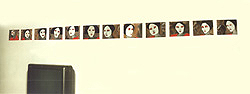
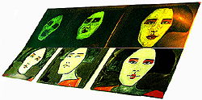
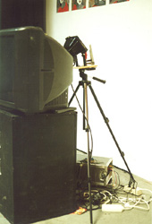

|  |  |  |  |  |
|
 click here to view larger image  click here to view larger image  click here to view larger image |
 |
Geisha Movie dark room, 8 minute geisha film/animation (made from photographs manipulated in Adobe Photoshop and Premiere) with music playing on large TV, 12 paintings (each on 30 x 40 cm canvas board) using glow-in-the-dark paint, 500 watt halogen light on a timer set to be on for 2 seconds of each 2-1/2 minutes, 20 movie theater style chairs. installation 2002 I am not a video artist. Adding movement to a visual composition increases the complexity of the resulting choices. Animations also allow more space to play with combining images and text. For awhile in art school, I enjoyed simultaneously approaching a work from both the mediums of painting and of animation. First thoughts on this work were about how movies are an illusion created by a combination of still images. I wanted to take the illusion apart and work with the pieces. |
This installation was shown:
|